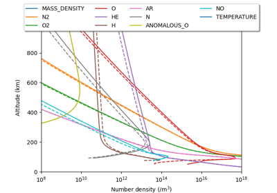

Examples# This is a collection of demos and examples of what can be done with pymsis.  Altitude profiles Altitude profiles Annual variation Annual variation Diurnal variation Diurnal variation Surface animation Surface animation Surface plot Surface plot Version Differences (Altitude) Version Differences (Altitude) Version Differences (Surface) Version Differences (Surface) Gallery generated by Sphinx-Gallery